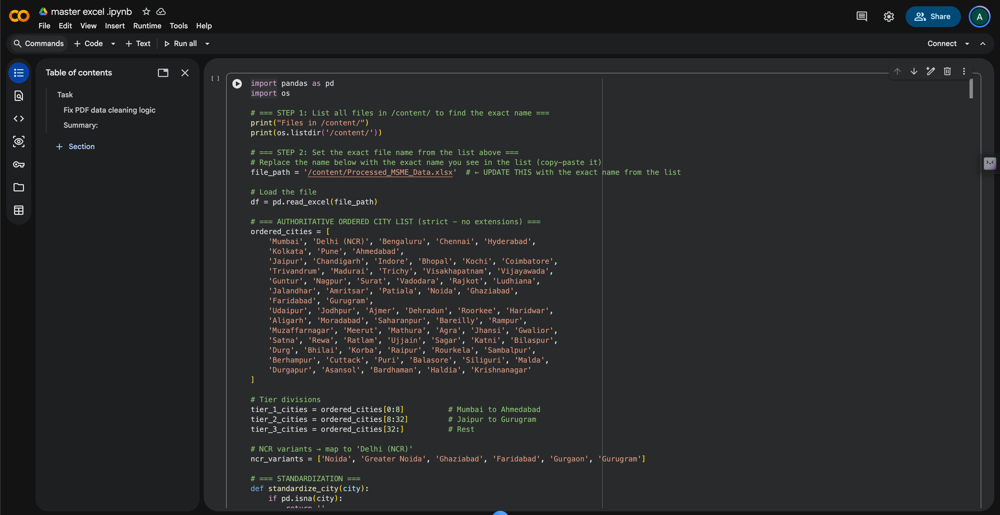

Case 01 · Data tooling
Turning a manual data task into a content decision
Using AI-assisted tooling to remove repetitive classification work while keeping judgment, checking and interpretation human-led.
Context
Content work does not always begin with a creative brief
Sometimes it begins with a messy spreadsheet. Early in the Cinekorn role, multiple files containing roughly 6,000 to 8,000 rows needed to be sorted and classified by tier before the information could be used for analysis.
Problem
Repetition blocked useful decisions
The repeated work was classification, not analysis. The data needed to be organised consistently before it could support a useful content decision.
Decision
AI as production tooling, not authority
Gemini helped generate the Python workflow. The process ran through Google Colab. AI accelerated the repetitive part. Checks, interpretation and final use of the data stayed human responsibilities.
Evidence
Workflow, not a magic number
From raw files to usable decisions
A two-day AI-assisted workflow with human review, not autonomous analysis
The script handled repetitive classification. Human review remained responsible for checking the output before it informed content decisions.
Google Colab workflow used to process classification with human checking of output.

Results
Task completed in two days
The classification finished in two days. No inflated efficiency percentage is claimed. The strategic value came from checking the output and deciding what the information meant for content work.
Takeaway
What this showed
When a task is repetitive, structured and large enough to become a bottleneck, AI can reduce the manual production burden. The strategic value still comes from checking the output and deciding what the information means.